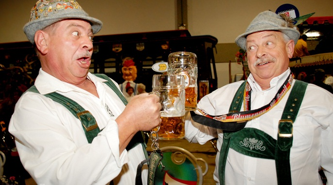

<section class="content">
    <article id="memebershiparticles">
        <header>
            <h1 id="memebrshiph1">Правила и Условия за членство в ПАРТИЯТА</h1>
        </header>
        <div class="picture">
            
        </div>
        <p>Изисквания към кандидата</p>
        <ul>
            <li>Да знае как да включи сам компютъра си</li>
            <li>Да има поне 1000 часа прекарани пред League Of Legends</li>
            <li>Да е изпил най-малко 1000 литра бира</li>
            <li>Да има поне един строшен компютър</li>
            <li>Да може да се прибере сам на 2 крака след запой</li>
            <li>Да познава качествения алкохол</li>
            <li>Да не се явява на заседание без Галон Бира</li>
            <li>Ако е пушач винаги да има цигари за останалите другари</li>
            <li>Да знае с какво мезе да си пие питието</li>
            <li>Да се грижи колежките да не са жадни и недоволни</li>
            <li>Да е доволен от това което му предоставя партията и никога да не мранка</li>
        </ul>
        <p>Необходими Документи</p>
        <ul>
            <li>Сертификат за участие в Бирен Фестивал</li>
            <li>Медицинско свидетелство от травма след пиянско падане или збиване</li>
            <li>АКТ от КАТ или Народната Милиция</li>
        </ul>
        <p>ПАРТИЯТА има право да</p>
        <ul>
            <li>Задължи членовете да присъстват на всички банкети и празненства</li>
            <li>Налага глоби и санкции без право на обжалване</li>
            <li>Променя правилата по нейна преценка и виждане</li>
        </ul>
        <p>Членовете имат Право да</p>
        <ul>
            <li>Донесе и изпие повече от определеното количество алкохол на заседание</li>
            <li>Да организира празненства и банкети със другите членове на ПАРТИЯТА</li>
            <li>Да обменя опит и мнение по вълнуващите го въпроси с другарите</li>
            <li>Да изказва мнението си свободно</li>
            <li>Да ругае другите политически сили по време на заседание</li>
        </ul>
        <hr />
        <footer>
            <div>Председател:</div>
            <div>Другаря НАКОВ</div>
        </footer>
    </article>
</section>